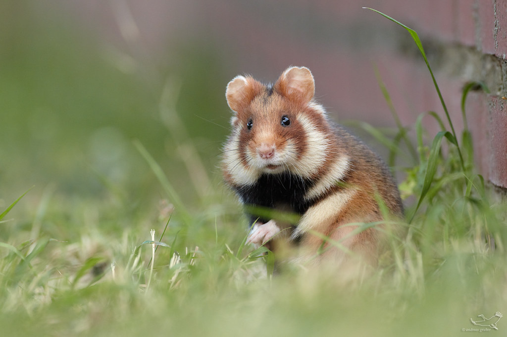

Хомяки обыкновенные
Самый крупный вид домашних хомяков. Эти грызуны агрессивны, свободолюбивы и рьяно охраняют территорию. Будьте готовы к тому, что хомяк выберет одного хозяина среди членов семьи и признает только его, агрессивно защищая себя и домик от других людей. Из плюсов - оригинальная трехцветная окраска, активное поведение, за которым интересно наблюдать.

Характеристики породы:
- Окрас: трехцветный, брюшко черное, коричневая спинка, белые носочки на лапках и белая мордочка.
- Длина тела: 20-35 см.
- Характер: рекомендуется одиночное содержание
- Продолжительность жизни: около 3 лет.
Образ жизни
Наиболее многочислен в лесостепи, в разнотравной и злаково-разнотравной степи. В лесную зону проникает по пойменным и суходольным лугам, а также по лесополью (вторично обезлесенным и распаханным участкам). На юге ареала придерживается влажных участков: речных долин, западин. В горы поднимается до нижней границы леса, а если лесной пояс отсутствует, — до горных лугов включительно. Селится на окультуренных участках — в рисовых системах, лесополосах, парках, садах, на огородах и даже в жилых постройках. На песчаных и рыхлых участках селится реже, чем на плотных грунтах. Образ жизни сумеречный. День проводит в норе, обычно глубокой и сложной, достигающей 8 м длины и более 1,5 м глубины. Иногда занимает норы сусликов. Постоянная нора имеет 2—5, реже до 10 выходов, гнездовую камеру и несколько кладовых. Вне сезона размножения обыкновенный хомяк ведёт одиночный образ жизни, агрессивен к сородича
Если вы хотите узнать про их образ жизни,